Load packages
# numerical calculation & data frames
import numpy as np
import pandas as pd
# visualization
import matplotlib.pyplot as plt
import seaborn as sns
import seaborn.objects as so
# statistics
import statsmodels.api as sm…
# numerical calculation & data frames
import numpy as np
import pandas as pd
# visualization
import matplotlib.pyplot as plt
import seaborn as sns
import seaborn.objects as so
# statistics
import statsmodels.api as sm# pandas options
pd.options.display.precision = 2
pd.options.display.float_format = '{:.2f}'.format # pd.reset_option('display.float_format')
# pd.options.display.max_rows = 7
# Numpy options
np.set_printoptions(precision = 2, suppress=True)from pathlib import Path
import pandas as pd
import tarfile
import urllib.request
def load_housing_data():
tarball_path = Path("data/housing.tgz")
if not tarball_path.is_file():
url = "https://github.com/ageron/data/raw/main/housing.tgz"
urllib.request.urlretrieve(url, tarball_path)
with tarfile.open(tarball_path) as housing_tarball:
housing_tarball.extractall(path="data")
return pd.read_csv(Path("data/housing/housing.csv"))
housing = load_housing_data()housing = pd.read_csv("https://raw.githubusercontent.com/ageron/data/main/housing/housing.csv")housing longitude latitude housing_median_age total_rooms total_bedrooms \
0 -122.23 37.88 41.00 880.00 129.00
1 -122.22 37.86 21.00 7099.00 1106.00
2 -122.24 37.85 52.00 1467.00 190.00
3 -122.25 37.85 52.00 1274.00 235.00
4 -122.25 37.85 52.00 1627.00 280.00
... ... ... ... ... ...
20635 -121.09 39.48 25.00 1665.00 374.00
20636 -121.21 39.49 18.00 697.00 150.00
20637 -121.22 39.43 17.00 2254.00 485.00
20638 -121.32 39.43 18.00 1860.00 409.00
20639 -121.24 39.37 16.00 2785.00 616.00
population households median_income median_house_value \
0 322.00 126.00 8.33 452600.00
1 2401.00 1138.00 8.30 358500.00
2 496.00 177.00 7.26 352100.00
3 558.00 219.00 5.64 341300.00
4 565.00 259.00 3.85 342200.00
... ... ... ... ...
20635 845.00 330.00 1.56 78100.00
20636 356.00 114.00 2.56 77100.00
20637 1007.00 433.00 1.70 92300.00
20638 741.00 349.00 1.87 84700.00
20639 1387.00 530.00 2.39 89400.00
ocean_proximity
0 NEAR BAY
1 NEAR BAY
2 NEAR BAY
3 NEAR BAY
4 NEAR BAY
... ...
20635 INLAND
20636 INLAND
20637 INLAND
20638 INLAND
20639 INLAND
[20640 rows x 10 columns]housing = housing.assign(
median_house_value = lambda x: x["median_house_value"] / 1000,
bedrooms_ratio = lambda x: x.total_bedrooms / x.total_rooms,
rooms_per_house = lambda x: x.total_rooms / x.households,
people_per_house = lambda x: x.population / x.households,
).query(
'ocean_proximity != "ISLAND" & median_house_value < 500 & housing_median_age < 50 & median_income < 10')housing.corr()/var/folders/mp/vcywncl97ml2q4c_5k2r573m0000gn/T/ipykernel_33353/1598269145.py:1: FutureWarning: The default value of numeric_only in DataFrame.corr is deprecated. In a future version, it will default to False. Select only valid columns or specify the value of numeric_only to silence this warning.
housing.corr() longitude latitude housing_median_age total_rooms \
longitude 1.00 -0.92 -0.03 0.03
latitude -0.92 1.00 -0.06 -0.03
housing_median_age -0.03 -0.06 1.00 -0.38
total_rooms 0.03 -0.03 -0.38 1.00
total_bedrooms 0.06 -0.06 -0.33 0.94
population 0.09 -0.11 -0.28 0.86
households 0.05 -0.07 -0.31 0.92
median_income -0.02 -0.07 -0.19 0.23
median_house_value -0.03 -0.17 0.02 0.15
bedrooms_ratio 0.12 -0.14 0.14 -0.19
rooms_per_house -0.04 0.13 -0.18 0.14
people_per_house 0.02 -0.01 0.02 -0.03
total_bedrooms population households median_income \
longitude 0.06 0.09 0.05 -0.02
latitude -0.06 -0.11 -0.07 -0.07
housing_median_age -0.33 -0.28 -0.31 -0.19
total_rooms 0.94 0.86 0.92 0.23
total_bedrooms 1.00 0.88 0.98 0.03
population 0.88 1.00 0.91 0.05
households 0.98 0.91 1.00 0.05
median_income 0.03 0.05 0.05 1.00
median_house_value 0.08 0.03 0.10 0.66
bedrooms_ratio 0.08 0.03 0.06 -0.64
rooms_per_house 0.01 -0.07 -0.08 0.31
people_per_house -0.04 0.06 -0.03 -0.00
median_house_value bedrooms_ratio rooms_per_house \
longitude -0.03 0.12 -0.04
latitude -0.17 -0.14 0.13
housing_median_age 0.02 0.14 -0.18
total_rooms 0.15 -0.19 0.14
total_bedrooms 0.08 0.08 0.01
population 0.03 0.03 -0.07
households 0.10 0.06 -0.08
median_income 0.66 -0.64 0.31
median_house_value 1.00 -0.23 0.11
bedrooms_ratio -0.23 1.00 -0.41
rooms_per_house 0.11 -0.41 1.00
people_per_house -0.03 -0.00 -0.00
people_per_house
longitude 0.02
latitude -0.01
housing_median_age 0.02
total_rooms -0.03
total_bedrooms -0.04
population 0.06
households -0.03
median_income -0.00
median_house_value -0.03
bedrooms_ratio -0.00
rooms_per_house -0.00
people_per_house 1.00 (
so.Plot(housing, x='longitude', y='latitude', pointsize="population", color="median_house_value")
.add(so.Dot(alpha=.5))
.scale(pointsize=(5, 20))
)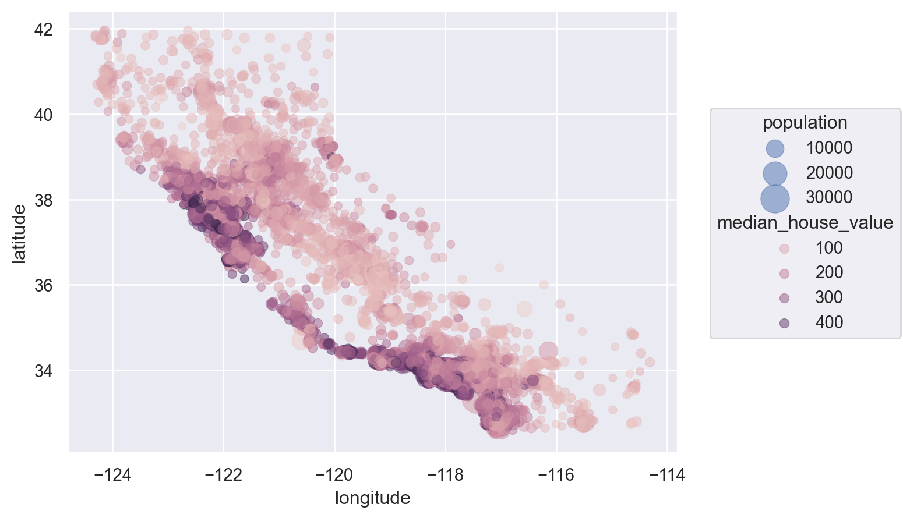
cor = housing.corr()
cor["median_house_value"].sort_values()/var/folders/mp/vcywncl97ml2q4c_5k2r573m0000gn/T/ipykernel_33353/1491143236.py:1: FutureWarning: The default value of numeric_only in DataFrame.corr is deprecated. In a future version, it will default to False. Select only valid columns or specify the value of numeric_only to silence this warning.
cor = housing.corr()bedrooms_ratio -0.23
latitude -0.17
people_per_house -0.03
longitude -0.03
housing_median_age 0.02
population 0.03
total_bedrooms 0.08
households 0.10
rooms_per_house 0.11
total_rooms 0.15
median_income 0.66
median_house_value 1.00
Name: median_house_value, dtype: float64(
so.Plot(housing, x='median_income', y='median_house_value')
.add(so.Dots(color=".6", alpha=.1))
.add(so.Line(), so.PolyFit(5))
.facet("ocean_proximity")
.layout(size=(12, 6))
)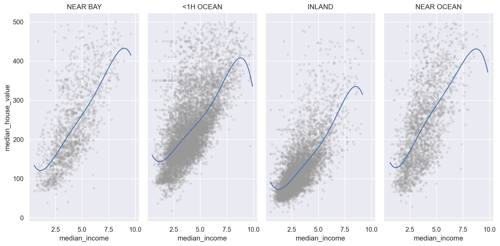
(
so.Plot(housing.query('population < 5000'), x='population', y='median_house_value')
.add(so.Dots(color=".6", alpha=.1))
.add(so.Line(), so.PolyFit(5))
)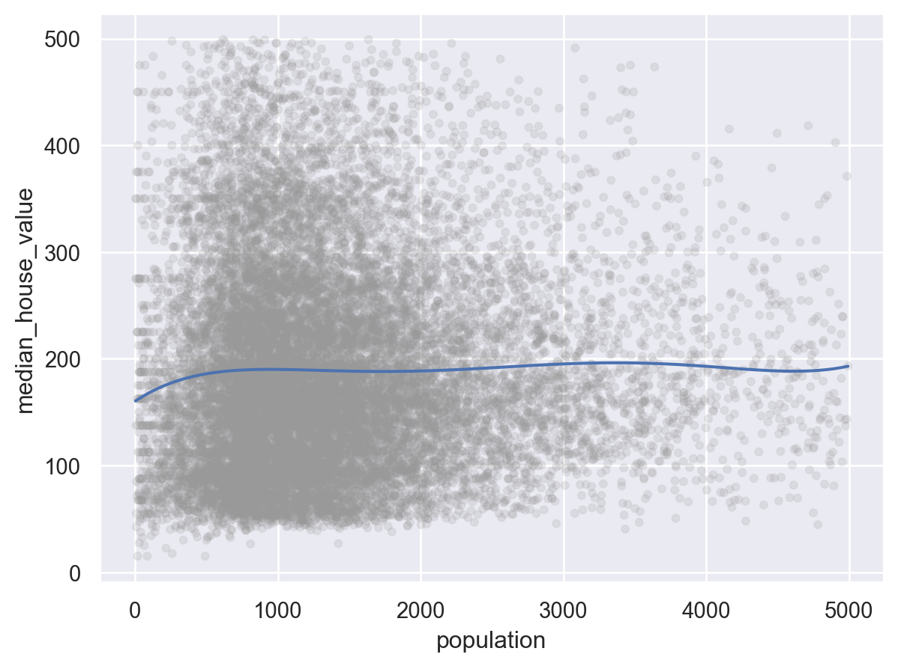
(
so.Plot(housing.query('households < 2000'), x='households', y='median_house_value')
.add(so.Dots(color=".6", alpha=.1))
.add(so.Line(), so.PolyFit(5))
.facet('ocean_proximity')
)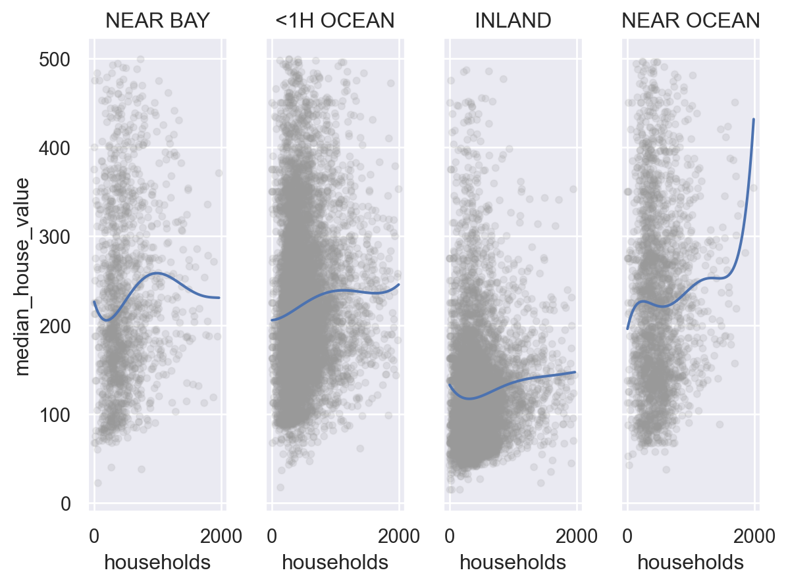
(
so.Plot(housing, x='total_rooms', y='median_house_value')
.add(so.Dots(color=".6", alpha=.1))
.add(so.Line(), so.PolyFit(5))
)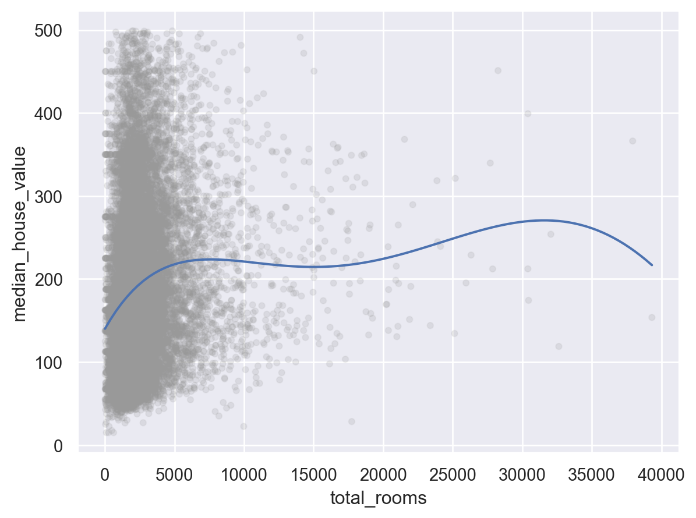
(
so.Plot(housing.query('total_rooms < 5000'), x='total_rooms', y='median_house_value')
.add(so.Dots(color=".6", alpha=.1))
.add(so.Line(), so.PolyFit(5))
.limit(y=(100, 300))
.facet('ocean_proximity')
)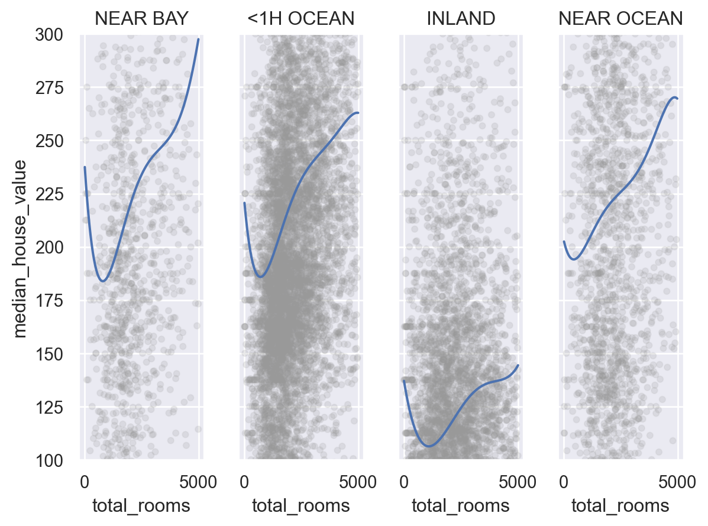
(
so.Plot(housing.query('total_bedrooms < 1500'), x='total_bedrooms', y='median_house_value')
.add(so.Dots(color=".6", alpha=.1))
.add(so.Line(), so.PolyFit(5))
.limit(y=(100, 300))
.facet('ocean_proximity')
)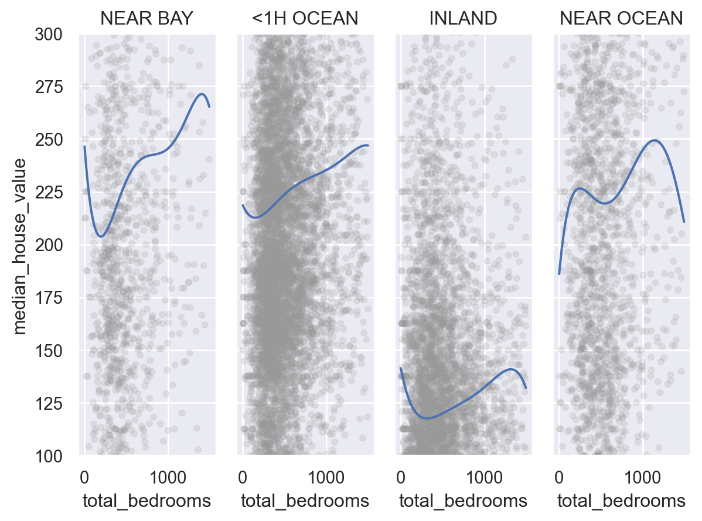
(
so.Plot(housing.query('bedrooms_ratio < 0.4'), x='bedrooms_ratio', y='median_house_value')
.add(so.Dots(color=".6", alpha=.1))
.add(so.Line(), so.PolyFit(5))
.facet('ocean_proximity')
)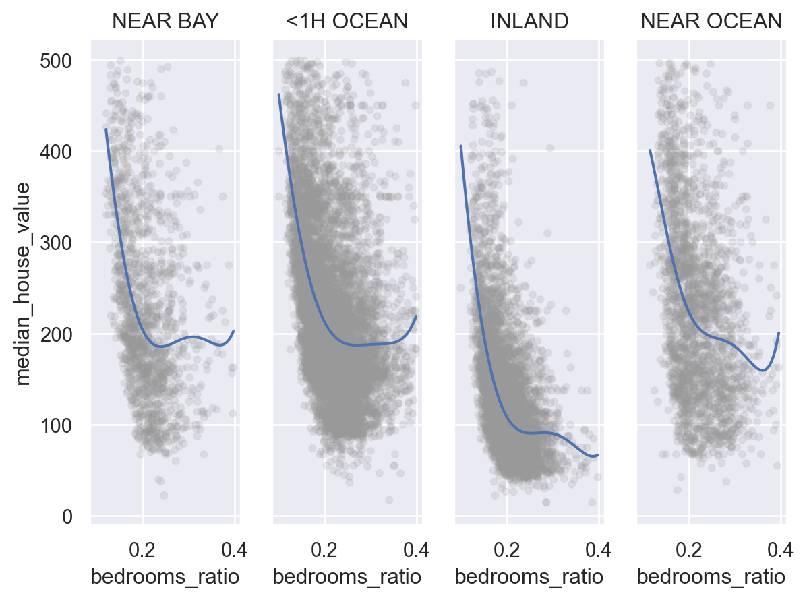
(
so.Plot(housing.query('rooms_per_house < 10'), x='rooms_per_house', y='median_house_value')
.add(so.Dots(color=".6", alpha=.1))
.add(so.Line(), so.PolyFit(5))
.facet("ocean_proximity")
)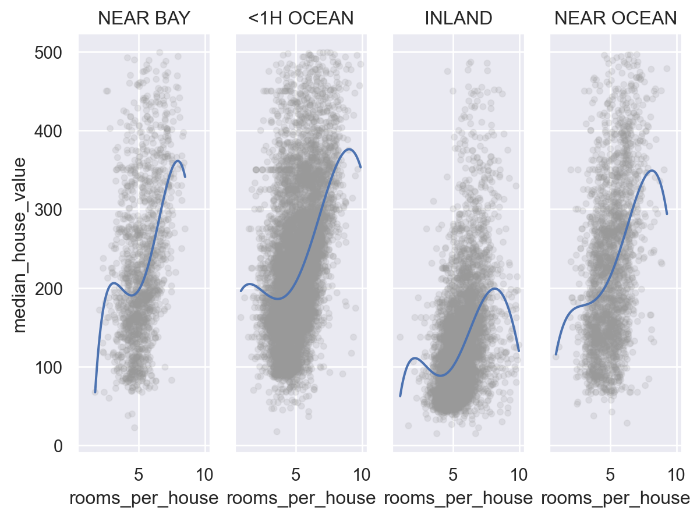
(
so.Plot(housing.query('people_per_house < 6'), x='people_per_house', y='median_house_value')
.add(so.Dots(color=".6", alpha=.1))
.add(so.Line(), so.PolyFit(3))
.facet("ocean_proximity")
.layout(size=(12, 6))
)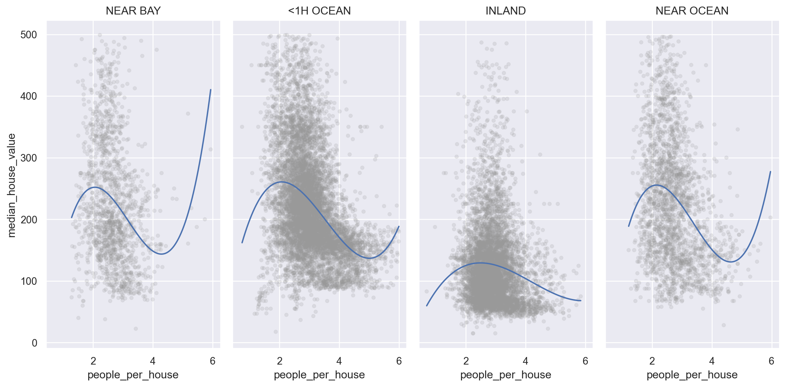
(
so.Plot(housing, x='housing_median_age', y='median_house_value')
.add(so.Dots(color=".6", alpha=.1))
.add(so.Line(), so.PolyFit(5))
.facet("ocean_proximity")
.layout(size=(12, 6))
)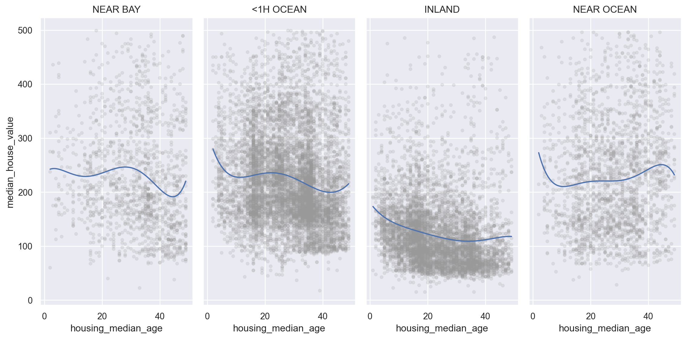